Git Workflow for Clean Collaboration
You and your team are about to start a new project. How will you manage your individual contributions without muddying up your master repo?
Implementing a solid git workflow can require a bit of time early on in a project, but in the long run it pays off in spades. Below is a rebase-based workflow that keeps group repos clean and easy to manage.
Getting organized
1 - Create a master repo on the organization profile that would live at http://github.com/org-name/project-name. This will be the upstream repo for all the team members.
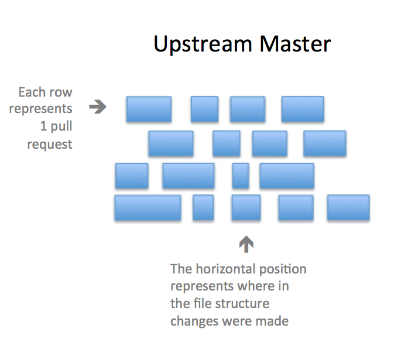
2 - Each member of your team should fork the repo on GitHub to his or her personal profile, clone his/her fork to a local computer, set the upstream remote to the team's repo, and checkout a new feature branch.
$ git clone https://github.com/<your-username>/<project-name>.git
$ git remote add upstream https://github.com/<org-name>/<project-name>.git
$ git checkout -b <new-branch-name>
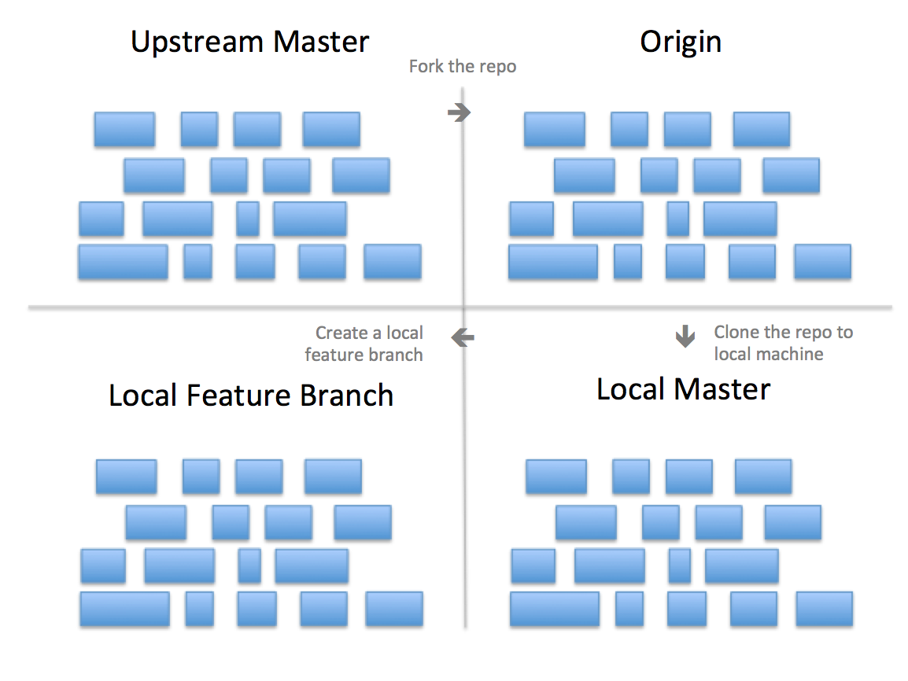
Rebasing 101
At this point, we're ready to begin the main workflow cycle that will repeat for every feature that is contributed to the project. Let's dive in.
3 - Work on the feature branch until you are finished with the feature and ready to add it to the upstream repo. Let's also assume that while you were working, someone else added another new feature to the team's repo.
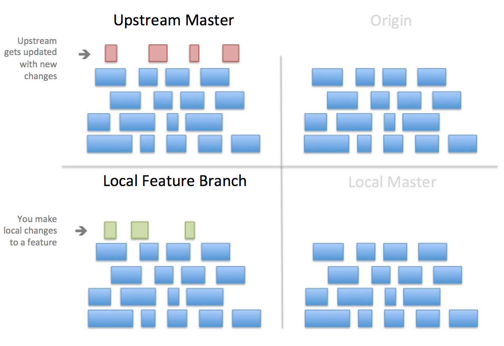
4 - Since your local version is now out of date compared to the upstream, how can your feature be added to the team's repo without causing conflicts? Here's where rebasing comes in.
$ git pull --rebase upstream master
Rebasing involves a few steps. Let's walk through what happens:
- First, the local changes are temporarily rolled back so that the codebase mirrors how it appeared before you started working on the feature.
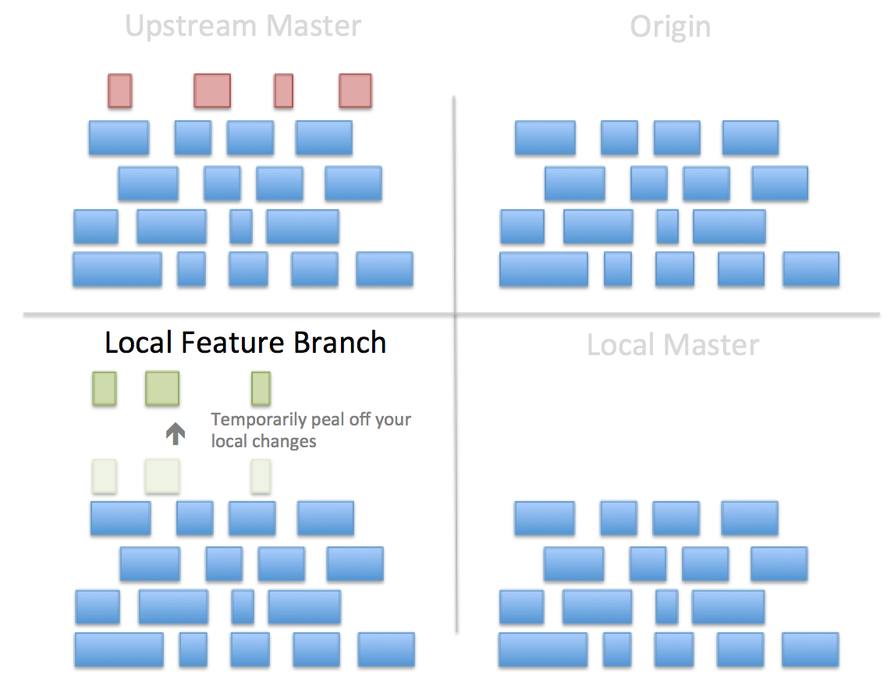
- Next, the latest version of the upstream repo is pulled down to your local branch.
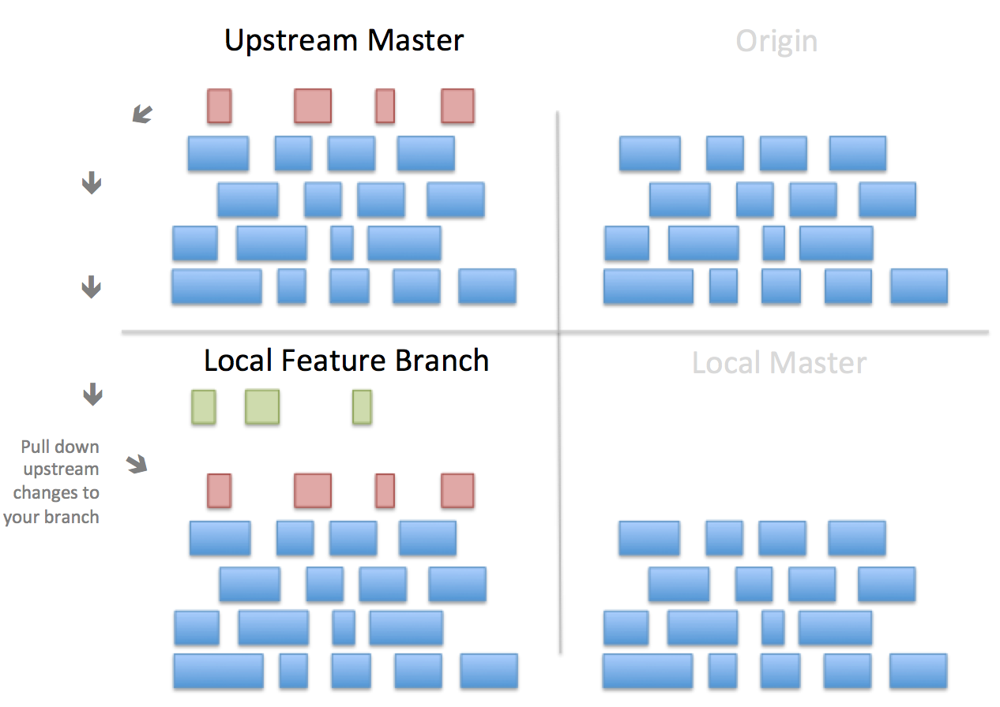
- Git will then try to add the changes from your new feature to the existing code, but will highlight places where there are conflicts.
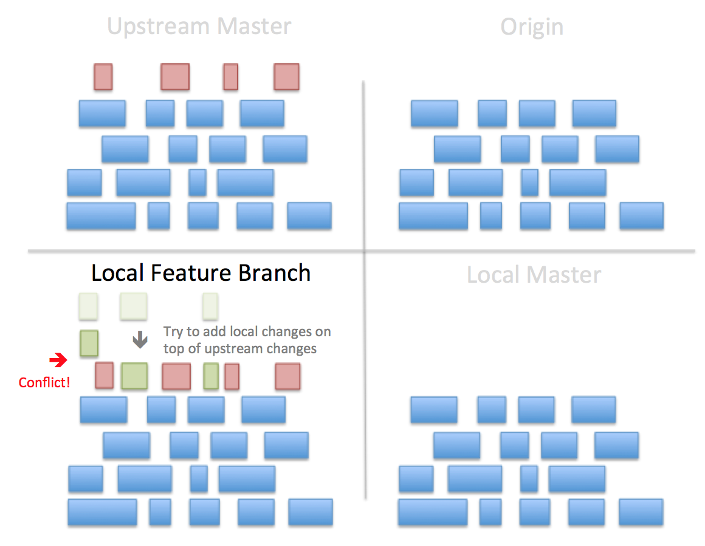
- In the command line, git will tell you which files contain conflicts. You will want to edit these files the same way you address merge conflicts.
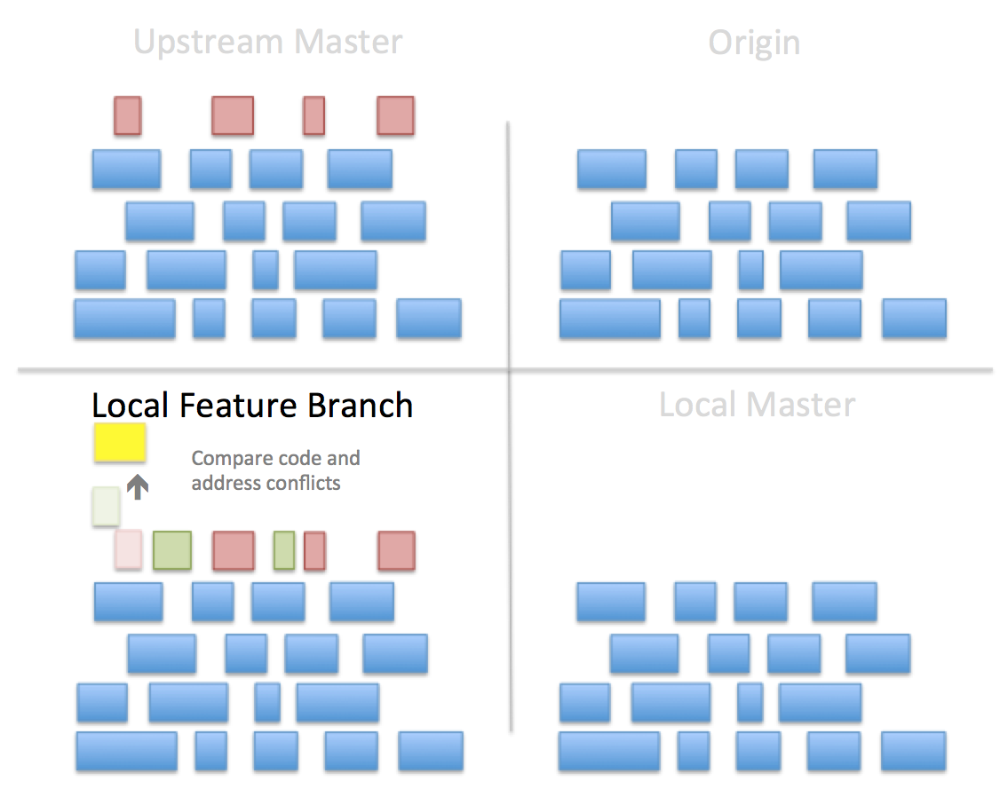
- Once you've edited the code to address the conflicts, save the files, add them, and then continue with the rebase.
$ git add .
$ git rebase --continue
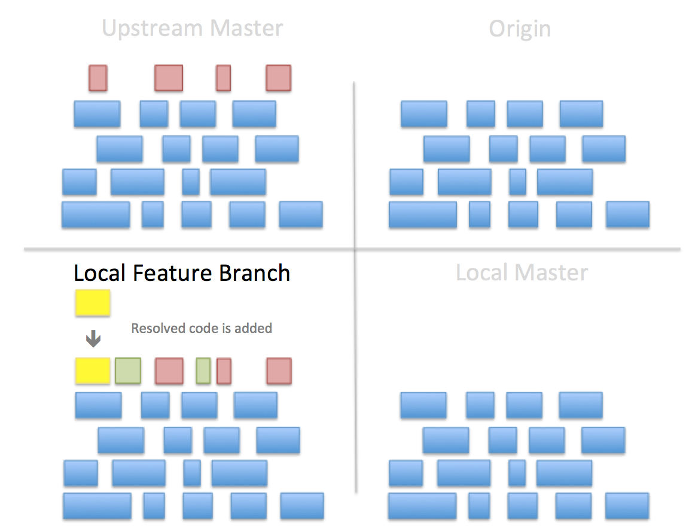
If more conflicts arise, repeat the last two bullets until the rebase ends.
Adding to upstream
Once the rebase ends, the local branch will contain both the upstream feature and the feature you developed locally. Now, to add your feature to the upstream repo, first push your local branch up to origin -
$ git push origin <feature-branch-name>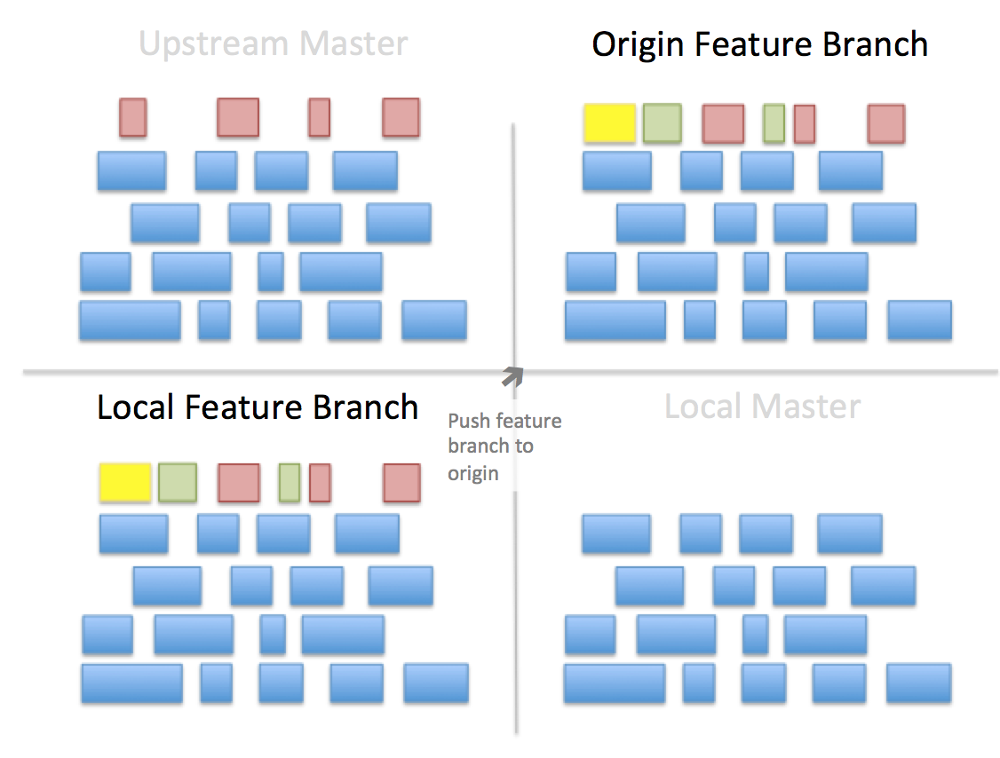Submit a pull request to your team's master repo. Once approved, your code will be added to the upstream. 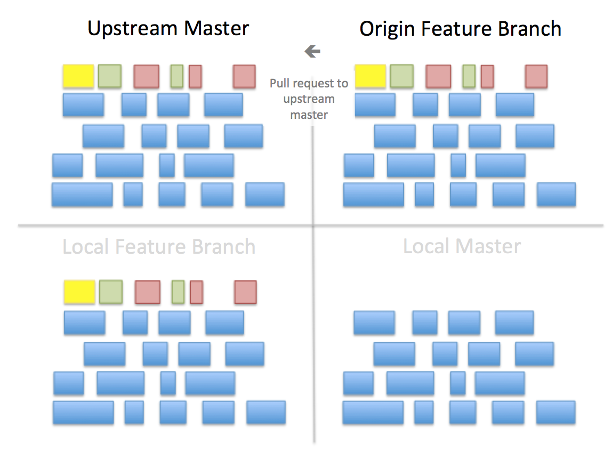
Finally, checkout to your local master branch and pull down the updated upstream.
$ git checkout master
$ git pull upstream master
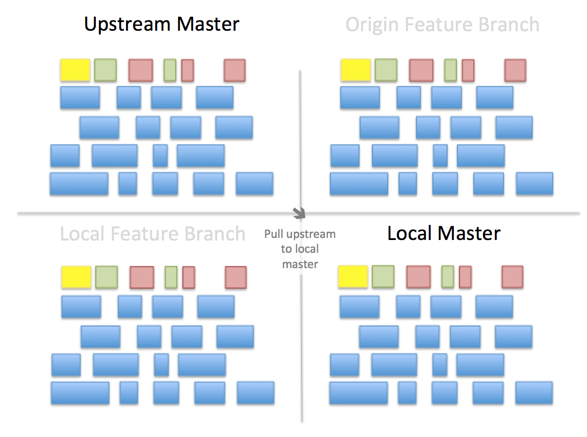
And that's it! Now you're ready to create another feature branch and start the process again.